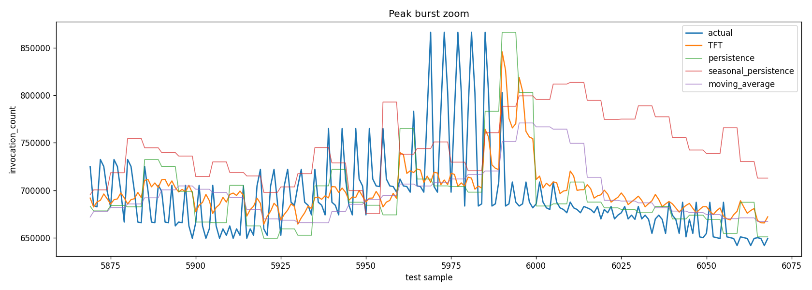
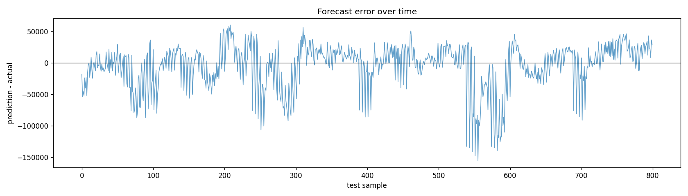
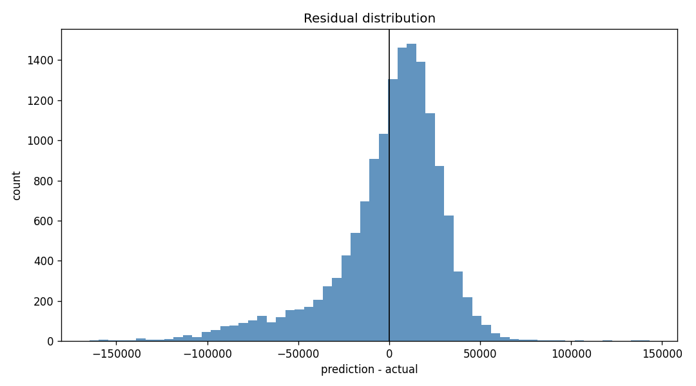
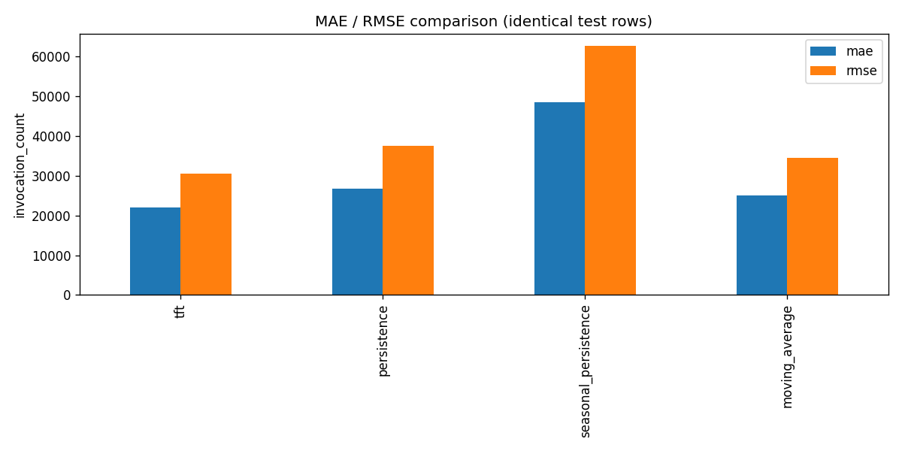
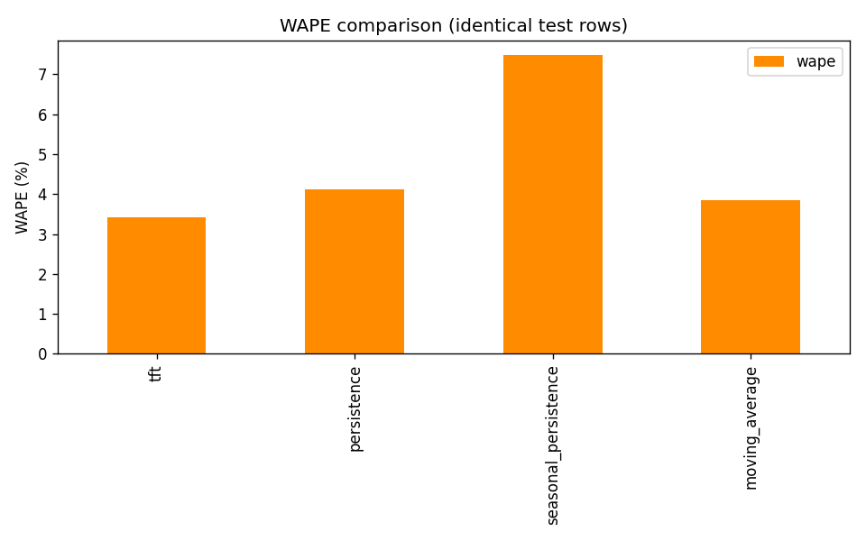
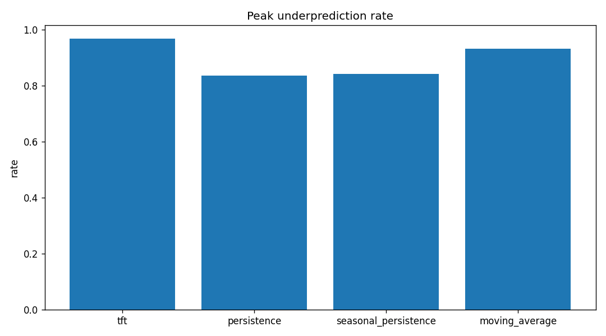
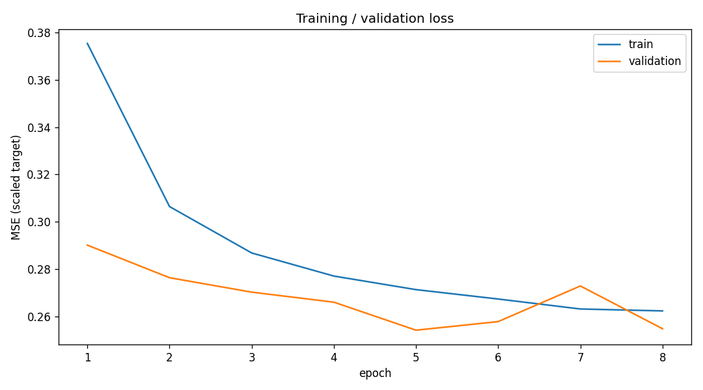
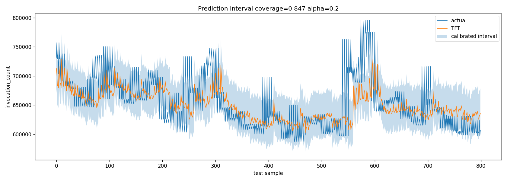

Forecast Model Dashboard
Azure Functions 2019 total invocation trace · run azure2019_total_h30_h5 · evidence: historical invocation counts, no measured latency/energy
1. What was trained and what was tested
| Model | Trained? | Design |
|---|---|---|
| TFT (trained) | Yes | Trained compact PyTorch TFT; selected best-validation checkpoint. |
| Persistence | No | Not trained; repeats the last observed invocation count. |
| Seasonal persistence | No | Not trained; reuses the value from seasonal_period=1440 steps. |
| Moving average | No | Not trained; repeats the 5-step moving average. |
trained Only the TFT has learned weights. The three baselines are deterministic rules evaluated on the exact same chronological test rows.
2. How the model was designed
Compact TFT
- PyTorch implementation with variable selection, GRN, LSTM encoder and attention.
d_model=32,heads=2,dropout=0.1, variable selectionTrue.- Input window: 30 steps; output: 5 future invocation-count steps.
- Features:
invocation_count, hour, day_of_week, peak_period.
Baselines and inference service
- Persistence: repeat last observed value.
- Seasonal persistence: value from 1440 steps earlier, with persistence fallback.
- Moving average: mean of last 5 steps.
TFTForecastServiceloads the checkpoint, validates feature order, and falls back to persistence for stale, non-finite, or model-error inputs.
3. Input / output contract and live-use boundary
contract only The forecast service exists today, but live telemetry wiring, cluster execution and Grafana-backed measurements are not validated in this experiment. This section describes what a live adapter must provide and what the controller receives.
Training input
- Official Azure prepared trace CSV with
timestamp,function_id,invocation_countand engineered calendar features. - Chronological windows: 30 observed steps → 5 future targets.
- Only historical invocation counts are real; no measured CPU, memory, latency or energy.
Live/inference input
- Telemetry events: timestamp, service/function ID, invocation count, duration, error count, resource fields and source metadata.
- Generic adapter aggregates events into fixed 60s windows.
TFTForecastService.forecast_history()requires a 2Dhistory_windowwith exact feature order and an optionalobserved_attimestamp.- Input rejected/fallback when non-finite, wrong shape, wrong feature count, or stale beyond
max_staleness_s.
| Runtime input | Type / shape | Purpose |
|---|---|---|
| history_window | float32[30][4] | Recent normalized feature rows in chronological order |
| feature_columns | list[str] | Validates feature order against the checkpoint |
| observed_at | ISO-8601 timestamp | Used for freshness/staleness checks |
| max_staleness_s | float | Rejects old observations and triggers persistence fallback |
{
"history_window": "float32[30][4]",
"feature_columns": [
"invocation_count",
"hour",
"day_of_week",
"peak_period"
],
"observed_at": "2026-11-20T09:00:00+00:00",
"max_staleness_s": 300
}
Live path: telemetry events → generic ingestion adapter → fixed-window trace → feature builder → forecast service → planner/PPO → safety shield → executor adapter. The forecast returns advisory workload values only; it never issues infrastructure commands.
| Output field | Type | Meaning used by the decision loop |
|---|---|---|
| forecast_horizon | int | Number of future control steps covered |
| predicted_workload | list[float] | 5 forecast invocation counts |
| trend | increasing/decreasing/stable | Compact directional summary |
| source | tft or fallback_persistence | Whether the model or deterministic fallback produced values |
| fallback / fallback_reason | bool / str|null | Audit trail for degraded inference |
| model_id / checkpoint_path | str | Model provenance |
| feature_columns / observed_at | list[str] / str | Input-order and freshness provenance |
{
"forecast_horizon": 5,
"predicted_workload": [
520.0,
548.0,
571.0,
559.0,
603.0
],
"trend": "increasing",
"source": "tft",
"fallback": false,
"fallback_reason": null,
"model_id": "compact_tft_pytorch",
"checkpoint_path": "results\\forecast\\azure2019_total\\checkpoint.pt",
"feature_columns": [
"invocation_count",
"hour",
"day_of_week",
"peak_period"
],
"observed_at": "2026-11-20T09:00:00+00:00"
}
Fallback example (stale input):
{
"forecast_horizon": 5,
"predicted_workload": [
520.0,
520.0,
520.0,
520.0,
520.0
],
"trend": "stable",
"source": "fallback_persistence",
"fallback": true,
"fallback_reason": "stale_input: age=412.0s > 300.0s",
"model_id": "compact_tft_pytorch"
}
4. How it was trained
Chronological split [0.7, 0.15, 0.15]. Scaler fit on train rows only. Training batches are shuffled within the train split; windows never cross split boundaries. Best validation checkpoint restored before testing.
| Split | Windows |
|---|---|
| Train | 14,057 |
| Validation | 2,985 |
| Test | 2,987 |
| Split | Start (UTC) | End (UTC) |
|---|---|---|
| Train | 2019-07-01 00:29:00+00:00 | 2019-07-10 19:19:00+00:00 |
| Validation | 2019-07-10 19:20:00+00:00 | 2019-07-12 21:38:00+00:00 |
| Test | 2019-07-12 21:39:00+00:00 | 2019-07-14 23:59:00+00:00 |
| Epoch | Train MSE | Validation MSE | Selected |
|---|---|---|---|
| 1 | 0.3753 | 0.2902 | |
| 2 | 0.3065 | 0.2765 | |
| 3 | 0.2869 | 0.2704 | |
| 4 | 0.2772 | 0.2661 | |
| 5 | 0.2714 | 0.2543 | best |
| 6 | 0.2675 | 0.2579 | |
| 7 | 0.2633 | 0.2730 | |
| 8 | 0.2624 | 0.2549 |
5. How it was tested
All four models were evaluated on the same 14,935 flattened test targets (2,987 windows × 5 horizon steps). Metrics include MAE, RMSE, MAPE, WAPE, sMAPE, bias, and peak-underprediction rate. Peak subset is the top decile (peak_quantile=0.9, n=1,495). Prediction intervals were calibrated on validation residuals at alpha=0.2.
Unit/integration coverage: T01/T02 history and horizon shape, T03 chronological non-overlapping splits, T04 metrics/zero handling/interval calibration, F01 stale/non-finite/model-error fallback paths, and an artifact test confirming four models plus CSV/JSON/checkpoint/plots are written.
| Replication item | Value |
|---|---|
| Dataset SHA-256 | b674433d83e923f82b688830cfb3efa9fbbe4f629d6ba210947bed38a91ba8b5 |
| Config SHA-256 | f9310ac68bfe24675598918ee9a5e8465266f5da6abf13f86203eca98329c3ab |
| Commit | b7ccce5f21249ea359775de625bac2cf53b5c6ea |
| Target column | invocation_count |
| Interval seconds | 60 |
6. Overall test results
| Model | MAE | RMSE | MAPE % | WAPE % | sMAPE % | Bias | Peak underpred. |
|---|---|---|---|---|---|---|---|
| TFT (trained) | 22,105.1 | 30,540.1 | 3.35% | 3.41% | 3.37% | -40.5766 | 96.8% |
| Persistence | 26,723.4 | 37,505.5 | 4.05% | 4.12% | 4.05% | 142.5286 | 83.7% |
| Seasonal persistence | 48,476.2 | 62,602.1 | 7.44% | 7.48% | 7.70% | -20,820.2 | 84.1% |
| Moving average | 24,961.1 | 34,507.9 | 3.78% | 3.85% | 3.79% | 206.6609 | 93.2% |
TFT is best on overall MAE/RMSE/WAPE/sMAPE, but its peak-underprediction rate is worse than persistence and seasonal persistence.
7. Peak-subset results
| Model | MAE | RMSE | MAPE % | WAPE % | sMAPE % | Bias | Peak underpred. |
|---|---|---|---|---|---|---|---|
| TFT (trained) | 57,499.1 | 65,944.9 | 7.76% | 7.83% | 8.17% | -56,629.2 | 99.3% |
| Persistence | 55,461.9 | 66,545.3 | 7.51% | 7.55% | 7.90% | -46,971.8 | 92.7% |
| Seasonal persistence | 79,667.9 | 97,678.3 | 10.82% | 10.85% | 11.75% | -70,110.8 | 90.0% |
| Moving average | 57,319.3 | 66,111.9 | 7.74% | 7.81% | 8.15% | -54,437.7 | 100.0% |
On the top-decile peak subset, persistence has the lowest WAPE (7.55%) versus TFT (7.83%).
8. TFT by forecast horizon
| Step | MAE | RMSE | MAPE % | WAPE % | sMAPE % | Bias | Peak underpred. |
|---|---|---|---|---|---|---|---|
| 1 | 18,488.0 | 26,159.0 | 2.80% | 2.85% | 2.82% | 791.8800 | 93.3% |
| 2 | 21,360.4 | 30,142.0 | 3.22% | 3.29% | 3.25% | -1,291.6 | 95.7% |
| 3 | 23,138.9 | 31,836.2 | 3.50% | 3.57% | 3.53% | -1,672.1 | 98.3% |
| 4 | 23,867.1 | 32,193.9 | 3.62% | 3.68% | 3.64% | 950.0193 | 97.7% |
| 5 | 23,671.1 | 31,947.6 | 3.59% | 3.65% | 3.61% | 1,018.9 | 99.0% |
9. Interval diagnostics
| Diagnostic | Value |
|---|---|
| alpha | 0.2000 |
| coverage | 0.8469 |
| under-coverage rate | 0.0633 |
| over-coverage rate | 0.0898 |
| mean interval width | 77,626.5 |
10. Generated plots










11. Limitations
- Azure invocation counts are real historical data; CPU, memory, latency, cold starts and energy are not measured in this dataset.
- TFT was trained once with seed 42; no multi-seed distribution or rolling-origin folds were run.
- Only the
totalaggregation was trained and evaluated at official scale. - Peak underprediction remains a known weakness; do not rely on this checkpoint for burst control without further work.
- No live deployment, Prometheus/Grafana, Qwen3, or PPO integration was exercised in this forecast experiment.
12. Reproduce
py -m scripts.evaluate_forecast \ --data-source azure_functions_2019 \ --out-dir results/forecast/azure2019_total \ --run-id azure2019_total_h30_h5 \ --epochs 8 py -m scripts.generate_forecast_dashboard